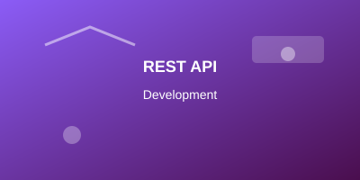
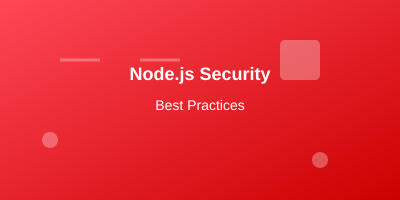

Node.js Basics: Getting Started Guide
Learn the fundamentals of Node.js development. This comprehensive guide covers installation, basic concepts, and your first Node.js application.
Read More
Discover the latest Node.js tutorials, best practices, and insights from our expert instructors. Stay ahead in your Node.js journey with our comprehensive blog posts.





Master the core concepts of Node.js including event loop, modules, and asynchronous programming.
Read MoreLearn to build robust web applications using Express.js, the most popular Node.js framework.
Read MoreDiscover how to integrate MongoDB with Node.js for efficient data management and storage.
Read MoreBuild scalable REST APIs using Node.js and follow industry best practices for API design.
Read More